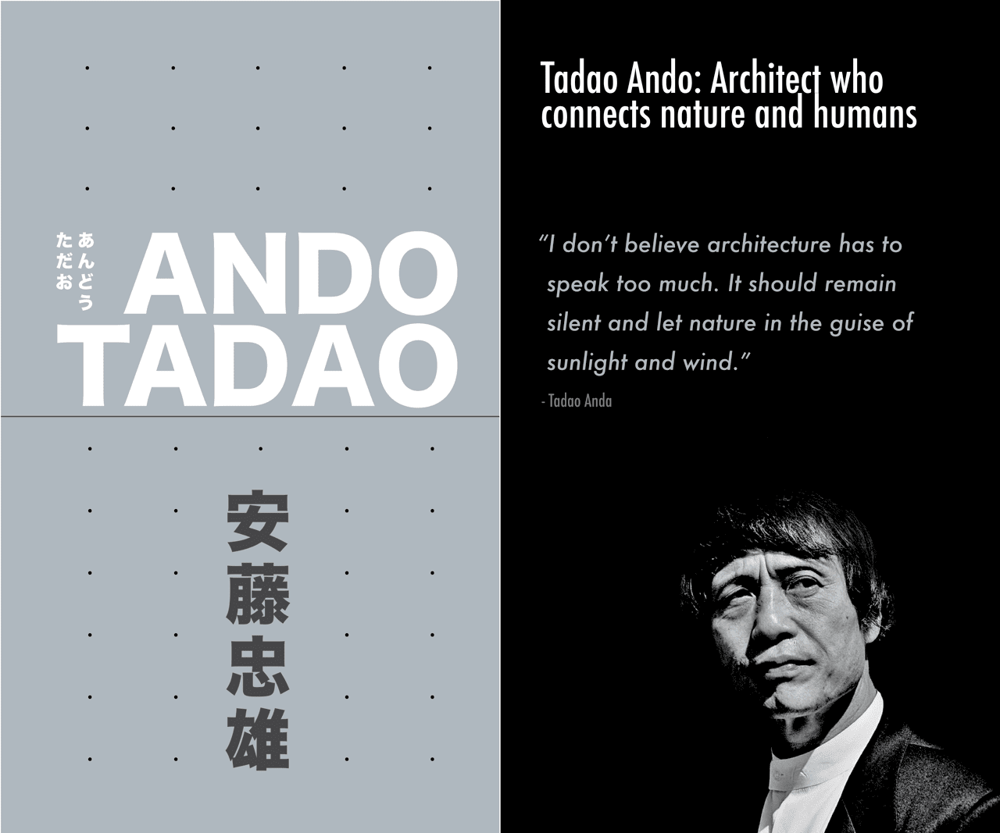
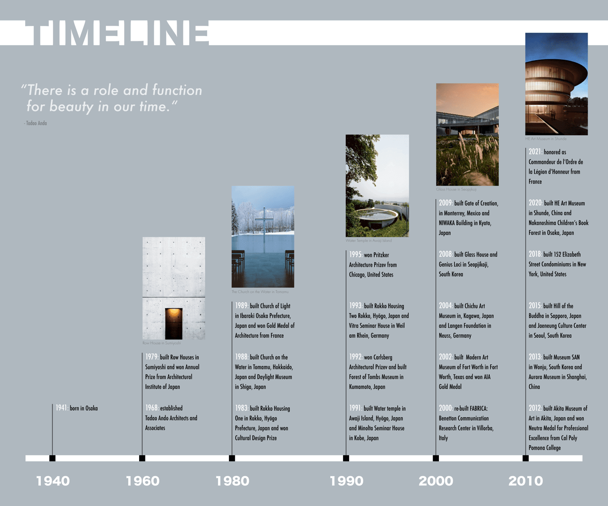

Tadao Ando:
Architect who connects
nature and humans
High Resolution Images




Tadao Ando
Type: A booklet
Software Used: 

This booklet aims to introduce the contemporary Japanese architect, Ando Tadao, and his architectural contributions.
Throughout its design, my goal was to convey my deep admiration for Ando's architectural style and ethos.
In paying homage to Ando’s work, I carefully crafted the design elements to resonate with his architectural imagery.
For instance, the cover art mirrors the essence of Ando’s initial creation, the Row House, showcasing its minimalist design and affinity for exposed concrete.
The chosen color palette of grey, black, and white was purposeful, intending to underscore Ando’s adept use of light within his designs.